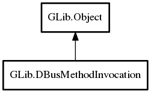

DBusMethodInvocation
Object Hierarchy:

Description:
public class DBusMethodInvocation :
Object
Instances of the DBusMethodInvocation class are used when handling D-Bus method calls.
It provides a way to asynchronously return results and errors.
The normal way to obtain a DBusMethodInvocation object is to receive it as an argument to the
handle_method_call function in a DBusInterfaceVTable that was passed
to register_object.
Content:
Creation methods:
Methods:
- public weak DBusConnection get_connection ()
- public unowned string get_interface_name ()
Gets the name of the D-Bus interface the method was invoked on.
- public weak DBusMessage get_message ()
- public weak DBusMethodInfo get_method_info ()
Gets information about the method call, if any.
- public unowned string get_method_name ()
Gets the name of the method that was invoked.
- public unowned string get_object_path ()
Gets the object path the method was invoked on.
- public weak Variant get_parameters ()
Gets the parameters of the method invocation.
- public weak DBusPropertyInfo get_property_info ()
Gets information about the property that this method call is for, if
any.
- public unowned string get_sender ()
Gets the bus name that invoked the method.
- public void* get_user_data ()
- public void return_dbus_error (string error_name, string error_message)
Finishes handling a D-Bus method call by returning an error.
- public void return_error (Quark domain, int code, string format, ...)
Finishes handling a D-Bus method call by returning an error.
- public void return_error_literal (Quark domain, int code, string message)
- public void return_error_valist (Quark domain, int code, string format, va_list var_args)
- public void return_gerror (Error error)
Like
return_error but takes a
Error instead of the error domain, error code and message.
- public void return_value (Variant? parameters)
Finishes handling a D-Bus method call by returning parameters
.
- public void return_value_with_unix_fd_list (Variant? parameters, UnixFDList? fd_list)
- public void take_error (owned Error error)
Like
return_gerror but takes ownership of error so
the caller does not need to free it.
Inherited Members:
All known members inherited from class GLib.Object